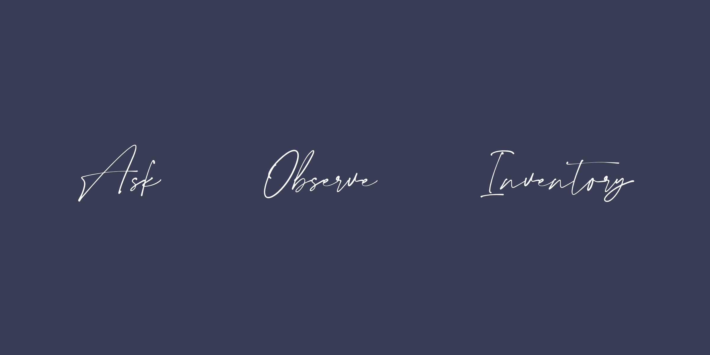

Begin answering your questions using the basic creative research techniques below. Report back on two or three research techniques you used, and what you learned from them.
Inventory: Collect, gather and list and what is already known about your topic (history, politics, culture, ecology)
Observe: Witness this prior knowledge in action and describe, draw, photograph, map, diagram, model, storyboard
Ask: Ask experiencers, experts, and those otherwise engaged with your topic anything and everything. How can their body of knowledge and experience become yours?

1. Mind Mapping:
Mind mapping is form of research technique that involves note taking, brainstorming and pictorial representation of the problem at hand. This type leads to better understanding of the problem and the visual representation tends to give a visual aid to the brain to help understand and comprehend the problem better.
2. AEIOU Technique:
AEIOU research technique is a qualitative technique which involves information gathering and observation for understanding a situation. It is a heuristic method to analyse and interpret the nature of the problem. From my experience, AEIOU technique is better and yields better results as it helps in categorising and organising things better unlike the mind mapping method. It helps to narrow down the domain and reduces the problem area which helps to focus better.
3. Behavioural Mapping:
It is an extremely important tool and research technique. It involves recording patterns and behavioural trends of different sets of people under a particular situation and time. It helps to determine user behaviour to products and study needs and patterns.
Different techniques are useful in different types of situations and studies. It also depends upon the approach taken, for example two people could use two different techniques in the same situation and yield different results.
Similarly each of these techniques have their own drawbacks and limitations as well. Mind mapping cannot be applied to big and complex problem as it does not segregate and treats different types of categories also in similar fashion. AEIOU, on the other hand, does not account for behavioural preferences but focus well on categorisation.
To state an example, a friend of mine was looking for apartments in New York City. He began by shortlisting the areas near by his university and then by searching through a lot of renting and broker websites and groups for those areas. Now as we notice these websites already cater to his need to short listing houses by area because that is a trend observed in the behaviour of people who come up to these websites.
From my friend's perspective, he categorised areas for this problem based on factors like distance from college, house rent, availability and neighbourhood, etc. This could be solved by mind mapping as well as the AEIOU approach.
Thus, there could be different ways of approaching different problems and each type comes with it's own advantages and limitations over the other techniques.